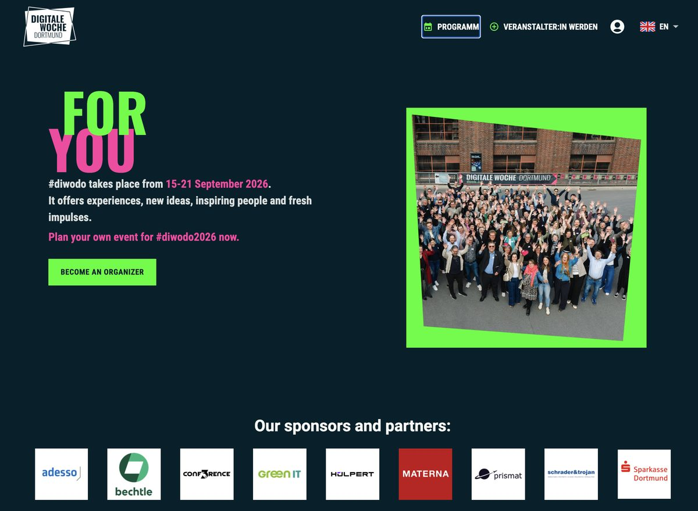

AI4DigiT bashkohet me EDIH Days në Digital Week të Dortmund
15–17 Shtator 2026

AI4DigiT do të marrë pjesë në EDIH Days @ Digital Week Dortmund (15–17 Shtator 2026), një event evropian treditor kushtuar networking-ut, bashkëpunimit dhe shkëmbimit të njohurive mes Qendrave Evropiane të Inovacionit Digjital.
Gjatë eventit, AI4DigiT do të angazhohet në sesione interaktive EDIH, aktivitete matchmaking dhe shkëmbime peer-to-peer për të ndarë përvoja, për të eksploruar mundësi bashkëpunimi dhe për të ndërtuar partneritete me EDIH të tjera në të gjithë Evropën.
AI4DigiT do të marrë pjesë gjithashtu në CONF3RENCE 2026 për të fituar njohuri mbi teknologjitë e reja dhe tendencat e inovacionit digjital të rëndësishme për aktivitetet e EDIH-ve, ndërkohë që merr pjesë në Digital Week Dortmund dhe në Festival of Arts, Tech & Taste (FATT), i cili përfshin ekspozime inovacioni dhe një event live pitch për start-up-et.
Gjithashtu, sesione pune të dedikuara me EDIH nga Ballkani Perëndimor, Ukraina dhe Moldavia do të fokusohen në forcimin e bashkëpunimit rajonal, ndjekjen e nismave të nisura gjatë EDIH Summit në Bruksel, dhe nxitjen e bashkëpunimit me ekosistemin dhe bizneset gjermane të inovacionit.
AI4DigiT joins the EDIH Days in the Digital Week of Dortmund
15–17 September 2026
AI4DigiT will participate in the EDIH Days @ Digital Week Dortmund (15–17 September 2026), a three-day European event dedicated to networking, collaboration, and knowledge exchange among European Digital Innovation Hubs.
During the event, AI4DigiT will engage in interactive EDIH sessions, matchmaking activities, and peer-to-peer exchanges to share experiences, explore collaboration opportunities, and build partnerships with other EDIHs across Europe.
AI4DigiT will also attend CONF3RENCE 2026 to gain insights into emerging technologies and digital innovation trends relevant to EDIH activities, while taking part in Digital Week Dortmund and the Festival of Arts, Tech & Taste (FATT), which includes innovation showcases and a live start-up pitch event.
In addition, dedicated working sessions with EDIHs from the Western Balkans, Ukraine, and Moldova will focus on strengthening regional cooperation, following up on initiatives launched during the Brussels EDIH Summit, and fostering collaboration with the German innovation ecosystem and businesses.